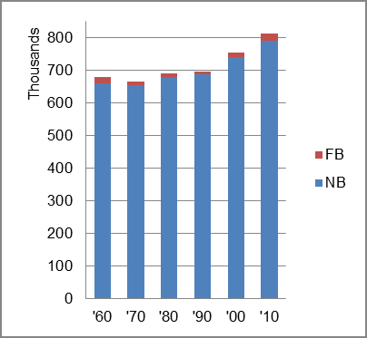

The foreign-born (FB) population increased from 18,577 in 1960 to 22,238 in 2010. That was an increase of 19.7 percent. The foreign-born share was 2.7 percent in 1960 and 2.7 percent in 2010.
The share of the overall population that was native-born (NB) increased by 19.6 percent.
South Dakota: Population 1960-2010 
The first chart below shows the three population change factors for three periods adjusted for annual average amounts. The largest factor adding population in all periods was B-D.
The second chart shows the same data but with an adjustment to reflect births to immigrants shifted to NIM. In it, there was little change in the relative importance of the three factors because of the small foreigh-born share in the state.
South Dakota: Sources of Population Change 1990-2013 South Dakota: Sources of Population Change (Adjusted) 1990-2013
B-D NDM NIM B-D NDM NIM 90-'99 87.8% neg. 12.2% 90-'99 82.6% neg. 17.4% 00-'09 75.4% 12.6% 12.1% 00-'09 69.2% 12.6% 18.2% 10-'13 51.4% 37.5% 11.0% 10-'13 43.0% 37.5% 19.5%